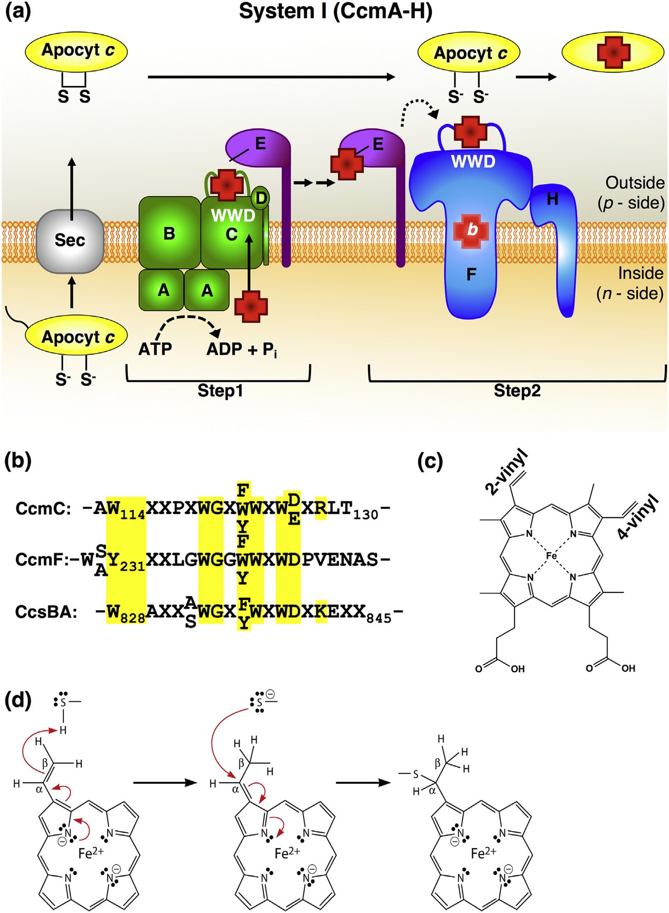
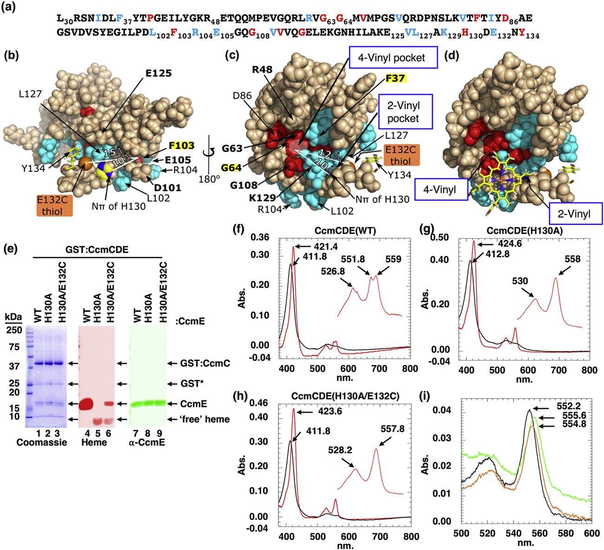
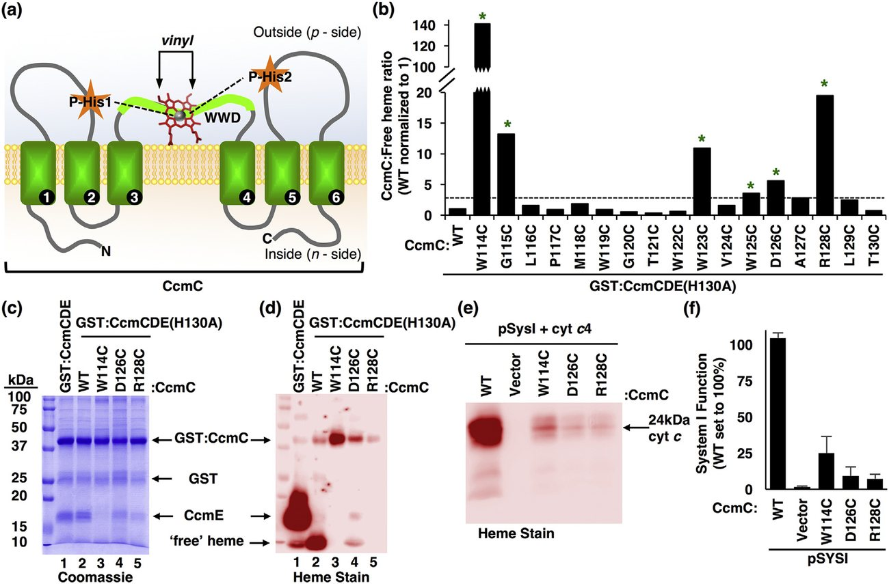
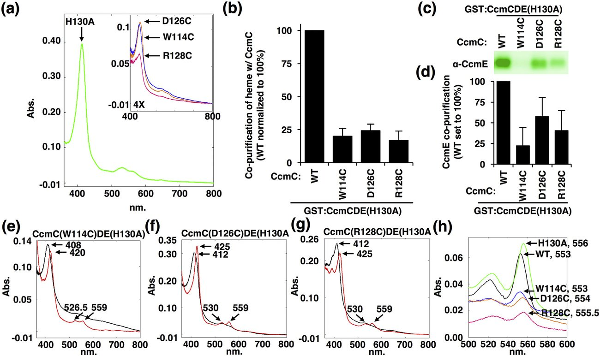
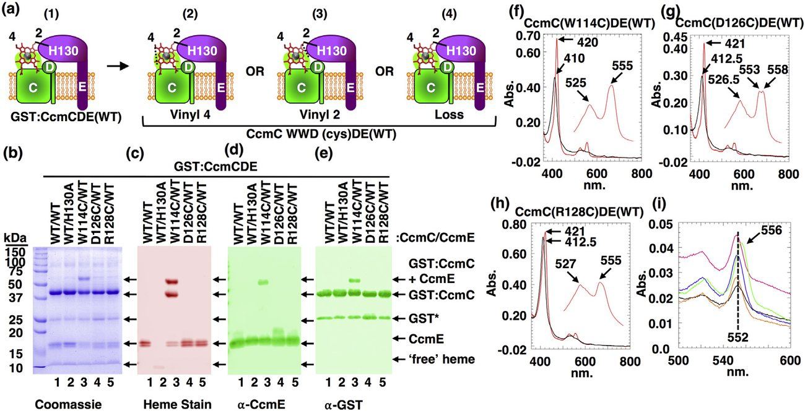
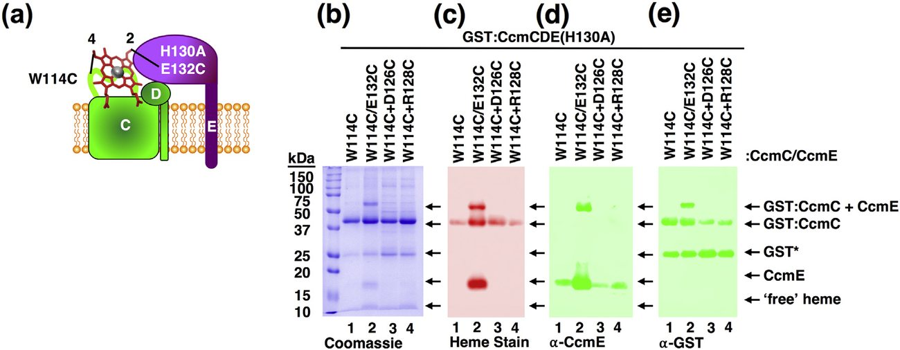
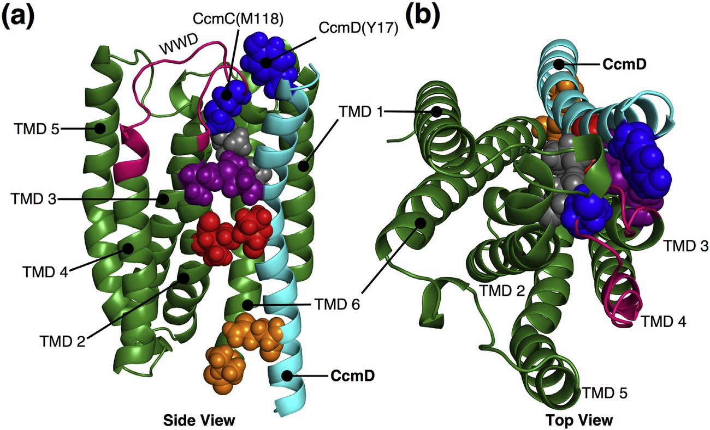
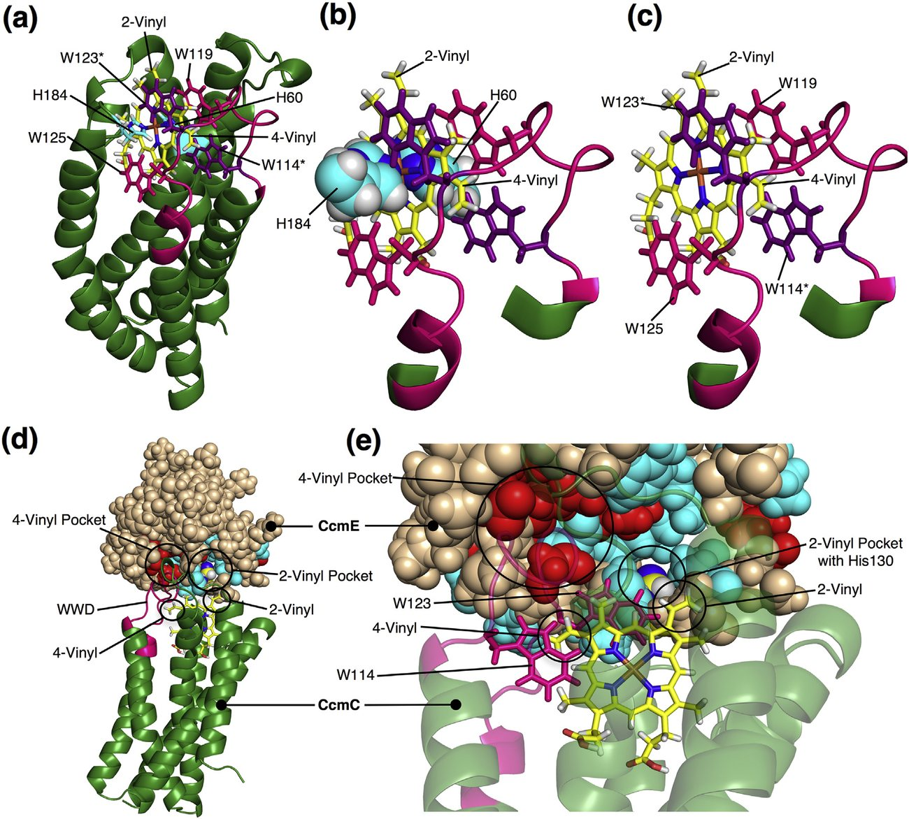

Protein Structure Determination
Structurally Mapping Endogenous Heme in the CcmCDE Membrane Complex for Cytochrome c Biogenesis
Introduction
Heme is synthesized in the cytoplasm of prokaryotes, whereas in eukaryotes, the final step of synthesis, iron insertion by ferrochelatase, occurs inside the mitochondrion (or chloroplast). Because labile (free) heme is toxic and yet is required by many proteins essential for cellular function like hemoglobins and cytochromes, heme must be specifically trafficked throughout the cell [1][2][3][4]. Candidate heme chaperones and membrane transporters have been proposed based largely on genetic studies. For example, FLVCR1 and FLVCR2 are members of the major facilitator superfamily of membrane proteins, implicated in heme export for erythropoiesis and in anemia [5][6][7]. The HRG1 family with four transmembrane domains (TMDs) is involved in heme uptake by the heme auxotroph Caenorhabditis elegans [8,9] and in human heme transport [10]. Heme transporters of the ATP-binding cassette (ABC) family have also been reported in eukaryotes and bacteria (reviewed in Ref. [3]). Since the structures and biochemistry of these putative heme traffickers are poorly understood, the approach to prove heme transport has been to examine phenotypes, such as anemia. Recently, heme sensor proteins have been developed that allow in vivo monitoring of the labile heme pool in various compartments in the cell [11][12][13][14]. Nevertheless, controversy remains on whether heme is the substrate for transporters such as FLVCR proteins [15,16]. Here we develop an approach to trap and map endogenous heme binding within putative transporters and chaperones.
The pathways for prokaryotic cytochrome c biogenesis called Systems I and II have been excellent models for heme transport, chaperoning, heme modification, and redox chemistries [17][18][19][20][21][22][23]. However, many outstanding questions relate to binding sites of heme during trafficking and attachment to cytochrome c (Fig. 1a). In System I, composed of eight integral membrane proteins (CcmA-H), the first step in biogenesis involves putative heme transport through CcmC via the CcmABCD complex [24][25][26], to the periplasmic heme chaperone, CcmE (Fig. 1a) [27,28]. Release of holoCcmE (i.e., with heme) requires the full CcmABCD complex, an ABC transporter release complex. In the second step, holoCcmE transports heme to the holocytochrome c synthetase, CcmF/H, for attachment to apocytochrome c [29,30]. Here, we focus on step 1 of the System I pathway, specifically on the transfer of heme from CcmC to CcmE. A structure for apoCcmE* (no TMD) has been determined by NMR (Fig. 2a-c) [31], but not for holoCcmE; thus, it is unclear where heme binds after or during its delivery by the CcmC protein. Two orientations of CcmE have been suggested for the binding to heme (Fig. 2b and c) [26] but the heme binding site remains unknown [32]. The CcmC protein, comprising six TMDs, is necessary for heme delivery to CcmE [24][25][26]28,33]. The small CcmD protein with a single TMD interacts with CcmC and is required for holoCcmE release [34]. CcmC was originally shown to have a conserved periplasmic WWD domain (Fig. 1a) [35], a sequence motif also present in CcmF (the cytochrome c synthetase of System I), and CcsBA (also called ResBC [21]), the System II cytochrome c synthetase (Fig. 1b) [35,36]. This domain (Fig. 1b) is the defining sequence feature of a superfamily of transmembrane proteins sometimes referred to as the "putative heme handling proteins (HHPs)" [37], yet there is no evidence to date of direct binding of heme to this domain. In Systems I and II, a major working hypothesis has been that the WWD domain binds heme, presenting the two vinyl groups of heme (Fig. 1c) to the cognate acceptor protein (CcmE for CcmC, apocytochrome c for CcmF and CcsBA; see Fig. 1a) [17,33,38].


Prior studies using structurally known soluble cytochromes b [39][40][41] have shown that substituting a cysteine for a residue near a heme vinyl group results in spontaneous thioether attachments (Fig. 1d), here called a cysteine/heme "crosslink." We reasoned that the chemical reactivity of either the 2-or 4-vinyl groups of heme toward a cysteine thiol might "trap" endogenous heme and thus be useful in mapping heme binding sites, even those that are transient in nature and in membrane proteins. Engineering 16 cysteine substitutions in CcmE and 17 in the WWD domain of CcmC, we demonstrate in each case that heme is crosslinked to specific cysteine variants. To test the structural models, double crosslinks to both vinyl groups of heme were engineered, which further facilitated stereochemical structural mapping of the heme binding sites. We provide the first conclusive evidence that the WWD domain directly binds heme and that its function is to position the vinyl groups of heme to its cognate acceptor.
Results
Mapping the heme binding site in CcmE
An intermediate CcmCDE membrane complex that contains heme was purified, made possible by inactivating CcmAB, thus preventing holoCcmE release from the complex (see Fig. 2e) [25,26]. To determine how heme is trafficked by this complex, we set out to structurally map where heme binds in both CcmE and CcmC in this complex. Using the structure of apoCcmE* [31], 16 residues mostly conserved (red) or semi-conserved (cyan) were substituted with cysteine in full-length CcmE (Fig. 2a), on either of two surface orientations displayed in Fig. 2b and c. The CcmE cysteine substitutions were engineered in the H130A background. Many studies on holoCcmE* by the Thöny-Meyer and Ferguson groups [27,31,32,[42][43][44][45] have shown that His130 is the residue in CcmE that normally has a covalent link to a vinyl group of heme, resulting in retention of heme in the CcmE polypeptide upon SDS-PAGE (Fig. 2e, lane 4). A resonance Raman study suggests that the covalent link is formed to the 2-vinyl of heme [45]; thus, we assume CcmE covalently binds to the 2-vinyl of heme for purposes of discussion here. Unfortunately, the location of His130 in apoCcmE* has not facilitated understanding which CcmE orientation or surface heme is located (Fig. 2b or c). In the CcmCDE(H130A) complex, heme is present as b heme (Fig. 1c), which migrates as "free" heme at the SDS-PAGE dye front (Fig. 2e, lane 5, and Supplemental Fig. S1). After purifying each CcmCDE cysteine variant complex; UV-vis spectra, SDS-PAGE/Coomassie gels, heme stains, and CcmE westerns were performed (Supplemental Figs. S1 and 2; Supplemental Table S1). Of the 16 complexes, only CcmE (H130A/E132C) possessed a covalent crosslink to heme (Fig. 2e, lane 6; Supplemental Fig. S2F). CcmCDE(WT) exhibited UV-vis spectra with a unique split α-peak (552 and 559 nm) upon reduction (Fig. 2f); CcmCDE(H130A) and the CcmCDE(H130A/E132C) showed similar UV-vis absorptions to each other and similar levels of heme were present in all three complexes (Fig. 2f-h). A reduced pyridine hemochrome spectra (that reflects the number of covalent bonds to the heme molecule) of each complex indicated that the α-peak (Fig. 2i) of CcmCDE(H130A/E132C) was in between CcmCDE(WT) and CcmCDE(H130A). This is consistent with a single covalent linkage of the E132C to a heme vinyl group, as established with SDS-PAGE (Fig. 2e, lane 6, and Supplemental Fig. S2F).
Four of the CcmE cysteine substitutions (F37, G64, F103, G113) resulted in unstable proteins, likely due to folding defects; thus, very little of these CcmE polypeptides were present in the complex (Supplemental Fig. S2A-E, Supplemental Table S1). Some of the cysteine substitutions were tested in the wild-type CcmE (with His130) background for function, that is, the ability to attach heme to cytochrome c with a complete System I pathway (Supplemental Fig. S3, Table S1). Consistent with the folding defect, CcmE(G64C) showed reduced function (15%). The CcmE(E132C) variant had approximately 60% function, suggesting that His130 is still capable of forming its attachment (see "double-cross-linking" below). The E132C cysteine/heme crosslink was used as a guide to model heme vinyl groups into the surface cavities of apoCcmE* (Fig. 2b-d). For either orientation (Fig. 2b or c), the E132C thiol was close enough (to His130) to form a thioether to the 2-vinyl. However, in the orientation in Fig. 2c, a conserved cavity (red, labeled the "4-vinyl pocket") is 10 Å from the 2-vinyl pocket, defined by His130 and E132C. The 4-vinyl pocket is formed from conserved residues involved in folding (e.g., Phe37, Gly64). In heme, the 2-vinyl is 10 Å from the 4-vinyl and can be modeled into the pockets (Fig. 2d). Further evidence for designating this the 4-vinyl pocket is presented below in the double-cross-linking experiments, where it is also confirmed that E132C crosslinks to the 2-vinyl group of heme.
The WWD domain of CcmC crosslinks to heme
To address the role of CcmC in delivery of heme to CcmE, the cysteine/heme cross-linking approach was applied to the conserved WWD domain of CcmC (Fig. 3a). CcmC is proposed to traffick heme from the cytoplasm to the WWD domain where heme is liganded by two conserved histidine residues (P-His1, 2) and its vinyl groups positioned for interaction with CcmE (Fig. 3a) [25,26,28]. Cysteine substitutions were engineered in CcmC in the CcmE(H130A) background and each of the 17 CcmCDE(H130A) complexes was initially assayed for stability (Supplemental Fig. S4A and Fig. 3c) and crosslinked heme (Supplemental Fig. S4B and Fig. 3b, d). If a CcmC WWD cysteine variant crosslinked to heme, an increase is observed in heme signal in the CcmC polypeptide upon SDS-PAGE (Fig. 3b, d). Six variants (asterisks* in Fig. 3b) were identified with a CcmC to free heme ratio greater than 2 × CcmCDE(H130A) and were selected for further analysis. Because CcmC(G115C)DE(H130A), CcmC(W1 23C)DE(H130A), and CcmC(W125C)DE(H130A) were unstable in some preparations, only CcmC(W114C)DE(H130A), CcmC(D126C)D E(H130A), and CcmC(R128C)DE(H130A) were further characterized. These variants were stable (Fig. 3c), and crosslinked heme at CcmC and had reduced levels of co-purified b-heme (Fig. 3d), suggesting that a cysteine/ heme crosslink was formed. Each of the three CcmC variants was tested for function by engineering the cysteine substitutions into the wild-type CcmE background. Each substitution resulted in at least a 75% reduction in function, as determined by levels of cytochrome c4 assembled (Fig. 3e and f).

Given their low function in the pathway, we further probed the heme that is present in each complex and the ability to form the CcmCDE complex. Total heme in the cysteine/heme crosslinked complexes were determined by Soret absorbance (~410 nm) of UV-vis spectra (Fig. 4a and b). The variants co-purified with ~25% of heme compared to CcmCDE(H130A). Previous results suggested that heme is required for the stable interaction of CcmC and CcmE ( [26], see discussion). Consistent with this, CcmE co-purified at lower levels with these variants compared to CcmCDE(H130A) (Fig. 4c and d). The cysteine/ heme cross-linking variants have similar UV-vis spectral profiles to CcmCDE(H130A) (Fig. 4e-g). Pyridine hemochrome spectra (Fig. 4h) showed that CcmC cysteine/heme cross-linking variants displayed a range of reduced α-peaks from 553 to 5 5 5 n m . T h i s r e s u l t i n d i c a t e s t h a t CcmC(W114C)DE(H130A) has a single crosslinked heme, while CcmC(D126C)DE(H130A) and CcmC(R128C)DE(H130A) are mixtures of crosslinked and b-type heme, consistent with the heme stain upon SDS-PAGE from these complexes (Fig. 3d). Orientation of heme in the WWD domain of the CcmC-CcmE complex, as determined by double-crosslinking of heme to both CcmE and CcmC If heme is stereochemically oriented in the WWD domain, CcmC cysteine variants should form the crosslink to a specific heme vinyl group (2-or 4-vinyls). For example, CcmC(W114C) might crosslink to a different heme vinyl than CcmC(D126C) or CcmC(R128C). To examine stereochemistry, these cysteine substitutions in CcmC were engineered in the WT CcmE background (containing His130). A previous study suggests that CcmE forms a covalent adduct to heme 2-vinyl via His130 [45]. We tested if the CcmC cysteine variants formed the CcmE His130 adduct (Fig. 5a(1)). Three possible crosslinks/adducts are diagrammed in Fig. 5a(2-4). The double crosslink (Fig. 5a(2)) possibility would define which cysteine substitution in the WWD domain crosslinks to the 4-vinyl. In this case, a double crosslink would manifest from a single heme covalently attached to both CcmC and CcmE. Glutathione S-transferase (GST) affinity purification of the CcmC(W114C)DE(WT) variant resulted in a new high-molecular-weight band of ~72 kDa upon SDS-PAGE (Fig. 5b, lane 3), corresponding to the size of double-crosslinked CcmC/ heme/E(WT) co-complex. This variant displayed a unique heme stain pattern with crosslinked heme at the CcmE polypeptide, the CcmC polypeptide, and the CcmC/heme/E(WT) double-crosslinked complex (Fig. 5c, lane 3). In contrast, CcmC(D126C)DE(WT) and CcmC(R128C)DE(WT) heme stained only the CcmE polypeptide, similar to CcmCDE(WT), demonstrating that these variants formed only the His130 adduct in CcmE (Fig. 5c, lanes 1, 4, and 5). The 72-kDa polypeptide in CcmC(W114C)DE(WT) was a double-crosslinked CcmC/heme/E(WT) co-complex, as determined by Western blotting with antisera to CcmE (Fig. 5d, lane 3) and GST (Fig. 5e, lane 3). An additional double crosslink was identified in CcmC(W123C)DE(WT) (Fig. S5). These results indicate that CcmC(W114C) and CcmC(W123C) form a crosslink to the heme 4-vinyl because the CcmE(H130) heme adduct is assumed to be to the 2-vinyl [27,44,45]. B e c a u s e C c m C ( D 1 2 6 C ) D E ( W T ) a n d CcmC(R128C)DE(WT) did not form double-crosslinked CcmC/heme/E(WT), we conclude that these cysteines crosslink to heme 2-vinyl only in the absence His130 (i.e., in CcmE(H130A)). In the presence of CcmE(H130), it is likely that a faster rate of formation occurs for the natural CcmE(H130) adduct (see Fig. 5a(4)). To confirm this, variants were further characterized by UV-vis spectra (Fig. 5f-h). CcmC(D12 6C)DE(WT) has a spectral profile similar to CcmCDE(WT) (Fig. 2f) with a diagnostic split α-peak (Fig. 5g), confirming that in this complex, nearly all heme is bound to CcmE(WT) via the His130 adduct. In contrast, CcmC(W114C)DE(WT) has a single symmetrical α-peak at 555 nm (Fig. 5f), shifted from the CcmE(H130A) background (Fig. 4e), representing a mixture of covalent adducts, as shown by SDS-PAGE (Fig. 5c, lane 3). CcmC(R128C)DE(WT) shows an α-peak at 555 nm and a shoulder at 558 nm, suggesting a perturbation of the heme environment (Fig. 5h). Pyridine hemochrome spectra revealed that all variants have a reduced α-peak of 552 nm (Fig. 5i), demonstrating that all have a single covalent bond to heme and that in the case of CcmC(W114C)DE(WT), much of the heme is attached to CcmE or CcmC (Fig. 5i, blue), as suggested by the heme stain result (Fig. 5c, lane 3).


If CcmC(W114C) is cross-linking to the 4-vinyl and CcmE(E132C) to the 2-vinyl, a double crosslink should also result with this pair of substitutions (Fig. 6a). A double crosslink would additionally confirm that the CcmE(E132C) is formed to the 2-vinyl (like His130) and not 4-vinyl group. We engineered CcmC(W114C) in the CcmE (H130A/E132C) background and tested for cross-linking. Figure 6b (lane 2) shows that purified CcmC(W114C)DE(H130A/E132C) complex yielded a 72-kDa polypeptide upon SDS-PAGE. The 72-kDa polypeptide stained for heme (Fig. 6c, lane 2), and it reacted with antisera to CcmE (Fig. 6d, lane 2) and GST (Fig. 6e, lane 2); thus, a intermolecular double crosslink was formed (between CcmE and CcmC, tethered covalently by heme). We conclude that CcmC Trp114 is adjacent to the 4-vinyl and CcmE His130 and Glu132 to the 2-vinyl in the CcmCDE complex. We attempted to generate an intramolecular CcmC double crosslink to both vinyl groups by combining two WWD domain cysteine substitutions, W114C with either D126C or R128C (in a CcmE(H130A) background). Unfortunately, such double CcmC mutants only bound a small amount of heme and CcmE (Fig. 6b-d, lanes 3-4); thus, we could not test for double cross-linking, although this result underscores the importance of WWD residues in binding heme.

Discussion
Using a cysteine/heme cross-linking approach on the CcmCDE membrane complex, the orientation of heme binding in CcmE was determined, as well as proof that heme directly binds to the WWD domain of CcmC with a specific orientation. These structural mapping results, combined with recent structural modeling advancements for membrane proteins [46,47], facilitate discussion of the mechanisms underlying holoCcmE formation (step 1 in Fig. 1a). We propose below the structural basis of the heme trafficking mechanism leading to stereochemical attachment of heme to CcmE (for CcmCDE). For holoCcmE, this trafficking culminates in the covalent attachment of the 2-vinyl of heme to the CcmE His130 residue. For all cytochromes c (CXXCH motifs), trafficking ends at the cytochrome c synthetase (CcmF and CcsBA), resulting in thioether formation between the first cysteine to 2-vinyl and the second cysteine to 4-vinyl of heme. For the Systems I and II biogenesis pathways, a key domain proposed to be involved in the CXXCH stereochemical attachment is the WWD domain (in CcmF or CcsA). Our study with the CcmC WWD domain offers insight into this superfamily (CcmC, CcmF, CcsA).
Structure and formation of the CcmCD complex and interaction with CcmE
CcmC has six TMDs and has been previously shown to be part of a CcmCD complex [33,34]. CcmD is a small 62-residue protein with a single TMD and N-terminus facing the periplasmic space [34,48]. Although CcmD is not essential for heme attachment to CcmE [28,34], it is required for release of holoCcmE from the CcmCDE complex, which occurs upon binding of CcmAB and ATP hydrolysis [24,34]. Rosetta de novo structure programs using genomic coevolution data predict the CcmC structure shown in Fig. 7a and b. Further analyses of coevolved residues between CcmC and CcmD allow modeling of CcmD in the CcmCD complex (Fig. 7a and b). CcmD Tyr17 is in the conserved "GlyXxxTyr" N-terminal motif [34] and is predicted to interact with the WWD domain (Met 118) of CcmC (blue residues in Fig. 7a and b). Four TMDs in CcmC are predicted to interact with each other (TM2-5) as well as CcmD in the structure (Fig. 7b).

Heme does not stably bind to CcmCD. That is, endogenous heme does not co-purify with the CcmCD complex without CcmE [26]. Similarly, CcmE does not bind stably to CcmCD without heme [26]. Thus, heme is a central component required for formation and purification of the holo(heme)CcmCDE complex [26]. We propose that CcmE first transiently interacts with CcmCD, exposing the heme binding WWD domain and that subsequent heme binding facilitates stable CcmCDE complex formation (see Fig. 1a). The initial CcmCD:CcmE interaction likely requires specific residues in each. For example, the CcmE(K129C/ H130A) variant exhibits some distinct properties consistent with such an interaction, with less heme and CcmE bound in the complex and a reduction in function for the CcmE(K129C) variant (Figs. S1 and S3; Table S1). It is possible that CcmE Lys129 is involved in initial interaction with CcmC, prior to heme binding, in keeping with its key location (see K129 in Fig. 2c). Here we confirm with many CcmC and CcmE variants that the levels of CcmE in complexes are always proportional to the level of heme. In the absence of CcmAB, heme in these ternary complexes is tightly bound, consistent with a requirement for the CcmAB-mediated release of holoCcmE from the complex (Fig. 1a, see "holoCcmE release" below).
Heme binding in the CcmCDE complex
Because no structure for CcmCD bound or released holoCcmE is known, we used heme/cysteine cross-linking to help define where vinyl groups of heme reside in the CcmCDE complex and holoCcmE. CcmE(E132C) is crosslinked to the 2-vinyl group of heme in a H130A variant (Fig. 6b-e). This information facilitated modeling of heme in CcmE revealing the "2-vinyl" and "4-vinyl" pockets (Fig. 2c and d). We then performed extensive cross-linking studies on CcmC, for the first time proving that the conserved WWD domain directly binds heme in System I (CcmC) (Fig. 3). CcmC trafficks heme to the WWD domain where its axial ligands to heme iron are periplasmic histidines (His60 and His184) [26]. For CcmC, the mechanism to traffick heme to the WWD domain is likely from the cytoplasm through the TMDs, although this has not been proven (Fig. 3a) [26]. Double-cross-linking studies (Figs. 5 and 6) successfully demonstrated that CcmC Trp114 crosslinks to the 4-vinyl of heme. We propose that heme in the WWD domain is oriented with 4-vinyl and 2-vinyl such that interaction with the acceptor protein is stereospecific. As structurally described below, this stereochemically aligns heme with the proposed 2-and 4-vinyl pockets of CcmE, allowing for adduct formation to His130 of CcmE (Fig. 2d). Although it is likely that 2-vinyl is attached to CcmE His130, even if it is the 4-vinyl and the heme reversed, the mapping and stereospecificities described here are still valid, including conclusions from the double-cross-linking experiments.
[47] note that for the hundreds of predicted membrane protein structures, a limitation of modeling includes ligand or co-factor binding domains as well as segments joined by TMDs. For the six TMD CcmC, such inaccuracies are therefore expected for the WWD domain and in adjoining periplasmic domains that contain the two histidines. We have modeled the WWD and adjoining domains (Fig. 8a-c) using the following parameters from our experimental studies as described in Materials and Methods: (i) the WWD domain forms a heme binding site with vinyl groups exposed; (ii) Trp114 and Gly115 are within 2 Å of the 4-vinyl group; (iii) Trp123 is near the 4-vinyl group; (iv) P-His1, His60 (in periplasmic loop 1), is an axial ligand to the heme iron; (v) P-His2, His184 (in periplasmic loop 3), is the second axial ligand on the opposite plane of heme (to axial ligand P-His1); and (vi) the conserved tryptophans that define the WWD domain (W119, W123, W125) interact directly with the heme. Using these constraints and low-energy modeling criteria, a heme binding site is predicted in Fig. 8a-c. An important feature is that the 4-vinyl and 2-vinyl groups are surface exposed to "present" to the acceptor proteins, in this case CcmE. The CcmCDE complex with structurally modeled heme is shown in Fig. 8d and e, where the 2-and 4-vinyl groups can be inserted into their respective pockets in CcmE. The CcmE His130 imidazole is shown in Fig. 8e adjacent to the exposed 2-vinyl. The WWD heme binding domain predicted here is a working model based in part on known functions and experimental findings, as detailed in Materials and Methods. The model is for illustrative purposes and will be useful for testing hypotheses on structure/function of superfamily members. Supplemental Figure S7 displays the ensembles of heme-binding sites (WWD domain) upon which the model was derived.

HoloCcmE release from the CcmCDE complex
Experimental results indicate a very stable holoCcmCDE complex, requiring CcmAB binding and ATP hydrolysis (via the CcmA ABC) for release of holoCcmE [24]. This process involves release of the two axial histidine ligands (in CcmC), with replacement of one by Tyr134 of CcmE [32,42,45] (Fig. 2c). We speculate that ATP hydrolysis by CcmA induces a conformational change in CcmCD that alters heme binding in the WWD domain. Given the specific co-evolved interactions between CcmD and the CcmC WWD domain (Fig. 7a and b) and the requirement of CcmD for release, we propose a working model for heme binding. In this proposal, CcmAB complexed with holoCcmCDE undergoes ATP hydrolysis (by CcmA). This hydrolysis disrupts heme:WWD interactions and favors CcmD contacts with the WWD domain (e.g., CcmD Tyr17 to CcmC Met118), thereby releasing heme (as holoCcmE). Next, binding of apoCcmE to CcmCD induces the WWD:heme binding conformation, which then restricts the CcmD:WWD domain interaction. Each ATP hydrolysis and release begins the cycle again. Once released, CcmE would naturally fold around the heme, likely maintaining the 2-vinyl and 4-vinyl heme interactions. This is analogous to release of holocytochromes c from their holocytochrome c synthetases, where it is generally agreed that complete folding occurs after heme attachment [18,[21][22][23]49].
Relevance of heme/cysteine cross-linking to cyt c biogenesis pathways (CXXCH thioether attachments) and other putative heme trafficking proteins
Our data demonstrate that heme resides in the CcmC WWD domain for stereochemical positioning and subsequent attachment to apoCcmE. Because the conserved WWD domain is also present in the holocytochrome c synthetases, CcmF (System I) and CcsBA (System II) (Fig. 1b), these likely function in an analogous manner to position and attach heme to the apocytochrome c. Ongoing analysis of the CcsBA WWD domain also demonstrates specific heme-cysteine crosslinks and supports this model, enabling structural and mechanistic comparisons between System I and System II. Previous studies have shown that alanine substitutions in selected residues of the WWD domain result in a reduced ability to mature cytochrome c [26,33,38,50,51]. The cysteine/heme cross-linking studies here have begun to elucidate the molecular basis for these defects, making it likely that the alanine substitutions alter heme binding or positioning in the WWD domain.
For CcmF, heme from CcmE is the substrate for attachment to cytochrome c [29], whereas in CcsBA, heme is proposed to be transported through the transmembrane regions to the WWD domain [51,52]. The structural predictions in Fig. 8a-c on the CcmC WWD domain are relevant to CcsBA (and CcmF), likewise suggesting the mechanism for stereochemical attachment to the apocytochrome c (CXXCH) acceptors, as long as the CXXCH motifs are themselves oriented upon binding (analogous to CcmE orientation).
The structures proposed here and heme crosslinks discovered will be useful in testing the dynamic processes of heme trafficking and the chemistries involved in synthetase reactions. Future cryo-EM and other structural elucidations of these heme traffickers and intermediates will also be informed by our structural models. This approach of cysteine/heme cross-linking may be useful in mapping endogenous heme binding sites in other putative heme transporters and in substantiating their roles in heme trafficking.
Materials and Methods
Escherichia coli
strains were grown in Luria-Bertani broth (LB; Difco) at 37 °C and 200 rpm with appropriate inducing reagents and selective antibiotics: isopropyl β-D-1-thiogalactopyranoside (IPTG; Gold Biotechnology), 1 mM or 0.1 mM; arabinose (Alfa Aesar), 0.2% (w/v); carbenicillin, 50 μg/mL; and chloramphenicol, 20 μg/mL.
Construction of cysteine variants
All cloning was performed in E. coli NEB 5- α and XL1-Blue. Cysteine substitutions were engineered using the QuikChange II Site-directed Mutagenesis Kit (Agilent Technologies) according to the manufacturer's instructions. Substitutions were confirmed by sequencing. A complete list of primers and templates can be found in Table S2.
Protein purification
Affinity purifications of GST:CcmC fusions were performed as described in Ref. [53]. Briefly, E. coli strain RK103 was used for protein expression. 10 mL starter cultures were diluted 1:100 into 1 L LB with appropriate antibiotics and grown at 37 °C and 200 rpm to an OD 600 of ~1.2. Cultures were induced with 1 mM IPTG, grown for an additional ~16 h, and harvested by centrifugation, and cell pellets were stored at -80 °C. Cells were resuspended in GST buffer [4.3 mM Na 2 HPO 4 , 1.5 mM KH 2 PO 4 , 2.7 mM KCl, 140 mM NaCl (pH 7.3)], supplemented with 1 mM PMSF (Sigma-Aldrich) and 1 mg/mL egg white lysozyme (Sigma-Aldrich). Cells were lysed by sonication (Branson250 sonicator) and cleared of cell debris by centrifugation at 24,000g for 30 min at 4 °C, followed by separation of soluble and membrane fractions via high-speed ultracentrifugation at 100,000g for 45 min at 4 °C. Membrane pellets were solubilized in GST buffer with 1% n-dodecyl-β-D-maltopyranoside (Anatrace) and affinity purified by the batch method with glutathione agarose (Pierce). Columns were washed by gravity flow, eluted in 4 mL GST buffer supplemented with 0.02% n-dodecyl-β-D-maltopyranoside and 20 mM L-glutathione (Sigma-Aldrich), and concentrated in a 30 kDa Amicon filter. Note: no exogenous heme was added to cells or protein preparations. Heme that co-purifies with the affinity purifications is endogenous and interaction with proteins occurred during growth and induction in E. coli. Protein concentrations were determined by Bradford Assay (Sigma-Aldrich).
CcmE modeling
PyMOL was used to visualize PDB 1SR3 of apoCcmE*, as determined by Enggist et al. [31]. Using the orientations discussed in Ref. [26], "vinyl pockets" were measured using PyMOL software. Heme (HEMsdf) was introduced into the apoCcmE structure and manually docked into the 2-vinyl and 4-vinyl pockets. CcmE residue Lys129 was omitted from CcmE when heme was docked (Fig. 2d), to better visualize heme docking.
Heme stains, immunoblots, and quantification
Heme stains were performed as previously described by Feissner et al. [54] with the following modifications. Proteins were transferred to 0.2 μm Immobilon P SQ (Millipore). Two membranes were layered to capture free heme that transferred through the first membrane. Imaging was performed with a LAS-1000 Plus (Fujifilm-GE Healthcare) or LI-COR Odyssey Fc (LI-COR Biosciences). We only analyzed purified Ccm proteins for heme staining; higher heme levels on the Ccm polypeptide compared to free heme is a likely indicator of covalent cross-linking, as supported by pyridine hemochrome spectra. Heme abundance was determined by densitometry performed with ImageJ [55] or Image Studio Lite Version 5.2 software (LI-COR Biosciences). Note that the total free heme value was determined by analysis of heme on both membranes. For immunoblots, proteins were separated via SDS-PAGE, transferred to 0.45 μm Amersham Protran nitrocellulose (GE Healthcare Life Sciences) and probed with the following antibodies: CcmE-α-CcmE at 1:15,000 [24] and GST:CcmC-α-GST at 1:5000 (Sigma-Aldrich). Protein A peroxidase (Sigma-Aldrich) and developed with Immobilon Western Chemiluminescent HRP substrate (Millipore) or IRDye 800 CW (LI-COR Biosciences) were used as secondary labels. Imaging and quantitation were performed as above, and total proteins stains were performed with Coomassie Blue or SYPRO Ruby Protein. Note that for ease of viewing, Coomassie stains are false colored blue, heme stains false colored red, and Western blots false colored green.
System I: CcmE cysteine variant function
The appropriate variant was co-expressed with pUCA6P4-Comp CcmAB (pRGK365) and pBAD CcmF:HisGH (pRGK388) in RK111 (RK103 with cyt c4:His chromosomal integrate).
System I: CcmC cysteine variant function
The appropriate variant was co-expressed with cytochrome c4 (pMCS85) in RK103. One milliliter starter cultures were grown overnight in LB broth supplemented with appropriate antibiotics at 37 °C with shaking. Cultures were diluted 1:5 into LB with appropriate antibiotics and grown at 37 °C and 200 rpm for 3 h. Proteins were induced with 0.1 mM IPTG (System I or System II plasmids) and 0.2% arabinose (cytochrome c4) and grown for 3 additional hours, harvested by centrifugation for 10 min at 5000g, and stored at -80 °C. Cells were lysed with 200 μL B-per reagent (Thermo-Scientific) according to the manufacturer's instructions. Protein concentrations were determined with a Nanodrop 1000 spectrophotometer (Thermo-Scientific), and 100 μg of protein was separated by SDS-PAGE, analyzed for cytochrome c maturation by heme stain and quantified by densitometry with ImageJ [55]; values were normalized to the wild-type System I plasmid.
UV-visible absorption spectroscopy
UV-vis absorption spectra were collected aerobically at room temperature with a Shimadzu UV-1800 spectrophotometer using UVProbe 2.43 software. Spectra were obtained in the elution buffer used for affinity purification. Quantitation of total heme levels was determined using 50 μg of air-oxidized purified protein with collection from 360 to 800 nm. Absorbance of the Soret peaks was normalized to wild type. Spectral characterization of "as purified" and reduced proteins was collected from 360 to 800 nm using a protein concentration that resulted in a minimum Soret absorbance of 0.2. Reduced spectra were generated chemically by addition of solid sodium dithionite (sodium hydrosulfite; Sigma-Aldrich) to the sample. Pyridine hemochrome spectra were performed as previously described [56]. Briefly, a protein concentration that resulted in a Soret absorbance of at least 0.3 was used, and 0.5 M NaOH and pyridine were added to the sample to final concentrations of 100 mM NaOH and 20% pyridine (v/v). Samples were chemically reduced as above and spectra were recorded from 500 to 600 nm.
Alignment generation
Starting with CcmC, CcmD, and CcmE E. coli sequences, Jackhmmer from the HMMER package version 3.1b1 [57] was used to search against the European Nucleotide Archive database of protein sequences from release 132, to generate an multiple-sequence alignment. To prevent paralogs from contaminating the alignment, different e-values were scanned until only one gene per genome was detected in the multiple-sequence alignment. E-values of 1E -40, 1E -2, and 1E -40 were selected for CcmC, CcmD, and CcmE, respectively, with 8 iterations each.
Paired alignments
Using the genomic information from European Nucleotide Archive, paired alignments were made for CcmC_CcmD, CcmC_CcmE, and CcmD_CcmE. To prevent paralogs, only sequences from the same operon were used. To determine if the sequences were from the same operon, only sequences that were within five genes apart in the genome were considered.
Contact prediction
HHfilter was used to filter redundant sequence (HHsuite version 2.0.15;id 90cov 75) [58] and positions that had more than 50% gaps were removed. The resulting alignment was inputted into GREMLIN v2.01 [59] for contact prediction.
Fragment picking
Given the discrepancy in secondary structure prediction between PSIPRED [60] and RaptorX [61] (see Supplemental Fig. S6), for fragment picking, both were used. Half the fragments came from PSIPRED and the other half from RaptorX. For fragment picking, Rosetta was used [62]. The structural profiles were disabled during picking, since these are biased toward soluble proteins. Fragment database from March 2015 was used from PDB30 data set [47].
Model building
For the initial global sampling, Rosetta ab initio protocol in combination with GREMLIN restraints was used as described in Ref. [47] for transmembrane proteins. In addition to these restraints, a bounded restraint was used between 0 and 6 Å of the CB-CB atoms of the two histidine residues (H60 and H184). The CcmD and CcmC sequences were concatenated with a glycine linker as follows:
MGGYAFFVWLAVVMTVIPLVVLVVHSVMQHRAIL-RGV[GGGGGGGGGGGG]WFIPWLAIASVVVLT VGWIWGFGFAPADYQQGNSYRIIYLHVPAAIWSM GIYASMAVAAFIGLVWQMKMANLAVAAMAPIGAVFT FIALVTGSAWGKPMWGTWWVWDARLTSELVLL FLYVGVIALWHAFDDRRLAGRAAGILVLIGVVNL PIIHYSVEWWNTLHQGSTRMQQSIDPAMRSPLRW SIFGFLLLSATLTLMRMRNLILL
A total of 20,000 models were generated. The top 10 models were compared for convergence. The top model (selected by best Rosetta + restraint energy) was then used for further modeling.
Modeling in the heme
The glycine linker was removed along with the following loops: 41-63, 115-126, and 184-195. HMY (heme-like molecule), with the vinyl and propionates replaced by methyl groups, was generated. The hybridization protocol in Rosetta [63] was used to sample the removed loops around HMY. HMY was allowed to rotate and translate. During the coarse-grained sampling, bounded restraints as described were used. During the full-atom refinement stage, harmonic restraints were used. These include distance restraints between NE2 and FE1 atoms (mean, 2 Å; stdev, 0.1), angle restraints between N1-FE1-NE2, N2-FE1-NE2, N3-FE1-NE2, and N3-FE1-NE2 (mean: 90°; stdev, 10), and dihedral restraint between CG-CD2-NE2-FE1 (mean, 180°; stdev, 10). Five thousand models were sampled. The heme placement converged in the top 10 models. These models were then screened for interaction with the WWD domain. More specifically, we looked for models where one of the methyl groups of HMY was near R128 and D126 and another methyl group was near W114, G115, and W123 (corresponding to locations where 2-vinyl and 4-vinyl would be). The only models that satisfied this condition buried the 2-vinyl site and exposed the propionates. Next, the models were screened so that the propionate faced down, 2-vinyl was exposed, and 4-vinyl was interacting with W114, G115, and W123. Interestingly, in these models, the R128 is near the propionate group, suggesting that that the arginine may form ionic interaction and upon mutation to cysteine, would allow the heme to rotate and crosslink to 2-vinyl. Other explanations are possible, so we focus discussion on the double-crosslinked results [W114C (Fig. 5) and W123C (Fig. S5)], as well as conserved tryptophans.
The lowest-energy model that satisfied the latter condition was selected for further sampling with the full heme. The WWD domain (114-128) was deleted to prevent bias from starting model. Ambiguous sigmoidal restraints (mean, 5 Å; slope, 4) were added between all available side-chain carbon atoms of W114, W119, W123, W125, and carbon atoms of heme, during both coarsed-grained and full-atom mode of the hybridized protocol. This was to bias sampling toward interactions that maximize aromatic ring stacking between the tryptophan and heme. Besides these and the histidine restraints described before, additional restraints were added between R128 and propionate carbons, and between W114, G115, W123, and 4-vinyl carbons. One thousand five hundred models were sampled. The top scoring model is shown in this paper. Due to the large number of degrees of freedom, the mutations involved in identifying the crosslinks, and uncertainties in modeling heme containing loops generally, the models in Fig. 8 are for illustrative purposes and hypothesis testing only. The models are not expected to be accurate at the level of the converged models in Ref. [47].
References
- Khan A, Quigley J. Control of intracellular heme levels: heme transporters and heme oxygenases. Biochim. Biophys. Acta Mol. Cell Res 2011. doi:10.1016/j.bbamcr.2011.01.008
- Hamza I, Dailey H. One ring to rule them all: trafficking of heme and heme synthesis intermediates in the metazoans. Biochim. Biophys. Acta Mol. Cell Res 2012. doi:10.1016/j.bbamcr.2012.04.009
- Chiabrando D, Vinchi F, Fiorito V, Mercurio S, Tolosano E. Heme in pathophysiology: a matter of scavenging, metabolism and trafficking across cell membranes. Front. Pharmacol 2014. doi:10.3389/fphar.2014.00061
- Reddi A, Hamza I. Heme mobilization in animals: a metallolipid's journey. Acc. Chem. Res 2016. doi:10.1021/acs.accounts.5b00553
- Quigley J, Yang Z, Worthington M, Phillips J, Sabo K, Sabath D, Berg C, Sassa S et al. Identification of a human heme exporter that is essential for erythropoiesis. Cell 2004. doi:10.1016/j.cell.2004.08.014
- Keel S, Doty R, Yang Z, Quigley J, Chen J, Knoblaugh S, Kingsley P, De Domenico I et al. A heme export protein is required for red blood cell differentiation and iron homeostasis. Science 2008. doi:10.1126/science.1151133
- Chiabrando D, Marro S, Mercurio S, Giorgi C, Petrillo S, Vinchi F, Fiorito V, Fagoonee S et al. The mitochondrial heme exporter FLVCR1b mediates erythroid differentiation. J. Clin. Invest 2012. doi:10.1172/JCI62422
- Rao A, Carta L, Lesuisse E, Hamza I. Lack of heme synthesis in a free-living eukaryote. Proc. Natl. Acad. Sci 2005. doi:10.1073/pnas.0500877102
- Rajagopal A, Rao A, Amigo J, Tian M, Upadhyay S, Hall C, Uhm S, Mathew M et al. Haem homeostasis is regulated by the conserved and concerted functions of HRG-1 proteins. Nature 2008. doi:10.1038/nature06934
- White C, Yuan X, Schmidt P, Bresciani E, Samuel T, Campagna D, Hall C, Bishop K et al. HRG1 is essential for heme transport from the phagolysosome of macrophages during erythrophagocytosis. Cell Metab 2013. doi:10.1016/j.cmet.2013.01.005
- Song Y, Yang M, Wegner S, Zhao J, Zhu R, Wu Y, He C, Chen P. A genetically encoded FRET sensor for intracellular heme. Chem. Biol 2015. doi:10.1021/cb5009734
- Hanna D, Harvey R, Martinez-Guzman O, Yuan X, Chandrasekharan B, Raju G, Outten F, Hamza I et al. Heme dynamics and trafficking factors revealed by genetically encoded fluorescent heme sensors. Proc. Natl. Acad. Sci 2016. doi:10.1073/pnas.1523802113
- Yuan X, Rietzschel N, Kwon H, Walter Nuno A, Hanna D, Phillips J, Raven E, Reddi A et al. Regulation of intracellular heme trafficking revealed by subcellular reporters. Proc. Natl. Acad. Sci 2016. doi:10.1073/pnas.1609865113
- Abshire J, Rowlands C, Ganesan S, So P, Niles J. Quantification of labile heme in live malaria parasites using a genetically encoded biosensor. Proc. Natl. Acad. Sci 2017. doi:10.1073/pnas.1615195114
- Yuan X, Fleming M, Hamza I. Heme transport and erythropoiesis. Curr. Opin. Chem. Biol 2013. doi:10.1016/j.cbpa.2013.01.010
- Ponka P, Sheftel A, English A, Scott Bohle D, Garcia-Santos D. Do mammalian cells really need to export and import heme?. Trends Biochem. Sci 2017. doi:10.1016/j.tibs.2017.01.006
- Kranz R, Lill R, Goldman B, Bonnard G, Merchant S. Molecular mechanisms of cytochrome c biogenesis: three distinct systems. Mol. Microbiol 1998
- Kranz R, Richard-Fogal C, Taylor J, Frawley E. Cytochrome c biogenesis: mechanisms for covalent modifications and trafficking of heme and for heme-iron redox control. Microbiol. Mol. Biol. Rev 2009. doi:10.1128/MMBR.00001-09
- Bonnard G, Corvest V, Meyer E, Hamel P. Redox processes controlling the biogenesis of c-type cytochromes. Antioxid. Redox Signal 2010. doi:10.1089/ars.2010.3161
- Sanders C, Turkarslan S, Lee D. Cytochrome c biogenesis: the Ccm system. Trends Microbiol 2010. doi:10.1016/j.tim.2010.03.006
- Simon J, Hederstedt L. Composition and function of cytochrome c biogenesis System II. FEBS J 2011. doi:10.1111/j.1742-4658.2011.08374.x
- Stevens J, Mavridou D, Hamer R, Kritsiligkou P, Goddard A, Ferguson S. Cytochrome c biogenesis System I. FEBS J 2011. doi:10.1111/j.1742-4658.2011.08376.x
- Gabilly S, Hamel P. Maturation of plastid c-type cytochromes. Front. Plant Sci 2017. doi:10.3389/fpls.2017.01313
- Feissner R, Richard-Fogal C, Frawley E, Kranz R. ABC transporter-mediated release of a haem chaperone allows cytochrome c biogenesis. Mol. Microbiol 2006. doi:10.1111/j.1365-2958.2006.05221.x
- Richard-Fogal C, Frawley E, Bonner E, Zhu H, San B, Francisco R, Kranz. A conserved haem redox and trafficking pathway for cofactor attachment. EMBO J 2009. doi:10.1038/emboj.2009.189
- Richard-Fogal C, Kranz R. The CcmC:heme:CcmE complex in heme trafficking and cytochrome c biosynthesis. J. Mol. Biol 2010. doi:10.1016/j.jmb.2010.06.041
- Schulz H, Hennecke H, Thöny-Meyer L. Prototype of a heme chaperone essential for cytochrome c maturation. Science 1998
- Schulz H, Fabianek R, Pellicioli E, Hennecke H, Thöny-Meyer L. Heme transfer to the heme chaperone CcmE during cytochrome c maturation requires the CcmC protein, which may function independently of the ABC-transporter CcmAB. Proc. Natl. Acad. Sci 1999
- Francisco B, Kranz R. Interaction of holoCcmE with CcmF in heme trafficking and cytochrome c biosynthesis. J. Mol. Biol 2014. doi:10.1016/j.jmb.2013.10.025
- Francisco B, Sutherland M, Kranz R. The CcmFH complex is the system I holocytochrome c synthetase: engineering cytochrome c maturation independent of CcmABCDE. Mol. Microbiol 2014. doi:10.1111/mmi.12510
- Enggist E, Thöny-Meyer L, Güntert P, Pervushin K. 1993
- Harvat E, Redfield C, Stevens J, Ferguson S. Probing the heme-binding site of the cytochrome c maturation protein CcmE. Biochemistry 2009. doi:10.1021/bi801609a
- Goldman B, Beck D, Monika E, Kranz R. Transmembrane heme delivery systems. Proc. Natl. Acad. Sci 1998
- Richard-Fogal C, Frawley E, Kranz R. Topology and function of CcmD in cytochrome c maturation. J. Bacteriol 2008. doi:10.1128/JB.00146-08
- Beckman D, Trawick D, Kranz R. Bacterial cytochromes c biogenesis. Genes Dev 1992
- Xie Z, Merchant S. The plastid-encoded ccsA gene is required for heme attachment to chloroplast c-type cytochromes. J. Biol. Chem 1996
- Lee J, Harvat E, Stevens J, Ferguson S, Saier M. Evolutionary origins of members of a superfamily of integral membrane cytochrome c biogenesis proteins. Biochim. Biophys. Acta Biomembr 2007. doi:10.1016/j.bbamem.2007.04.022
- Hamel P, Dreyfuss B, Xie Z, Gabilly S, Merchant S. Essential histidine and tryptophan residues in CcsA, a system II polytopic cytochrome c biogenesis protein. J. Biol. Chem 2003. doi:10.1074/jbc.M208651200
- Barker P, Ferrer J, Mylrajan M, Loehr T, Feng R, Konishi Y, Funk W, Macgillivray R et al. Trans-mutation of a heme protein. Proc. Natl. Acad. Sci 1993
- Barker P, Nerou E, Freund S, Fearnley I. Conversion of cytochrome b562 to c-type cytochromes. Biochemistry 1995
- Lin Y, Wang W, Zhang Q, Lu H, Yang P, Xie Y, Huang Z, Wu H. Converting cytochrome b5 into cytochrome c-like protein. Chembiochem 2005. doi:10.1002/cbic.200500030
- Enggist E, Schneider M, Schulz H, Thöny-Meyer L. Biochemical and mutational characterization of the heme chaperone CcmE reveals a heme binding site. J. Bacteriol 2003
- Daltrop O, Stevens J, Higham C, Ferguson S. The CcmE protein of the c-type cytochrome biogenesis system: unusual in vitro heme incorporation into apo-CcmE and transfer from holo-CcmE to apocytochrome. Proc. Natl. Acad. Sci 2002. doi:10.1073/pnas.152120699
- Lee D, Pervushin K, Bischof D, Braun M, Thöny-Meyer L. Unusual heme-histidine bond in the active site of a chaperone. J. Am. Chem. Soc 2005. doi:10.1021/ja044658e
- Uchida T, Stevens J, Daltrop O, Harvat E, Hong L, Ferguson S, Kitagawa T. The interaction of covalently bound heme with the cytochrome c maturation protein CcmE. J. Biol. Chem 2004. doi:10.1074/jbc.M408963200
- Ovchinnikov S, Kinch L, Park H, Liao Y, Pei J, Kim D, Kamisetty H, Grishin N et al. 2015. doi:10.7554/eLife.09248
- Ovchinnikov S, Park H, Varghese N, Huang P, Pavlopoulos G, Kim D, Kamisetty H, Kyrpides N et al. Protein structure determination using metagenome sequence data. Science 2017. doi:10.1126/science.aah4043
- Goldman B, Beckman D, Bali A, Monika E, Gabbert K, Kranz R. Molecular and immunological analysis of an ABC transporter complex required for cytochrome c biogenesis. J. Mol. Biol 1997. doi:10.1006/jmbi.1997.0992
- Verissimo A. Cytochrome c biogenesis System I: an intricate process catalyzed by a maturase super-complex?. Biochim. Biophys. Acta 2014. doi:10.1016/j.bbabio.2014.03.003
- Ahuja U, Thöny-Meyer L. Dynamic features of a heme delivery system for cytochrome c maturation. J. Biol. Chem 2003. doi:10.1074/jbc.M310077200
- Frawley E, Kranz R. CcsBA is a cytochrome c synthetase that also functions in heme transport. Proc. Natl. Acad. Sci 2009. doi:10.1073/pnas.0903132106
- Ahuja U, Kjelgaard P, Schulz B, Thöny-Meyer L, Hederstedt L. Haem-delivery proteins in cytochrome c maturation System II. Mol. Microbiol 2009. doi:10.1111/j.1365-2958.2009.06833.x
- Sutherland M, Rankin J, Kranz R. Heme trafficking and modifications during system I cytochrome c biogenesis: insights from heme redox potentials of Ccm proteins. Biochemistry 2016. doi:10.1021/acs.biochem.6b00427
- Feissner R, Xiang Y, Kranz R. Chemiluminescent-based methods to detect subpicomole levels of c-type cytochromes. Anal. Biochem 2003
- Rasband W. ImageJ, US Natl. Inst. Health, Bethesda MD 1997
- Berry E, Trumpower B. Simultaneous determination of hemes a, b, and c from pyridine hemochrome spectra. Anal. Biochem 1987
- Eddy S. A new generation of homology search tools based on probabilistic inference. Genome Inform 2009
- Söding J. Protein homology detection by HMM-HMM comparison. Bioinformatics 2005. doi:10.1093/bioinformatics/bti125
- Kamisetty H, Ovchinnikov S, Baker D. Assessing the utility of coevolution-based residue-residue contact predictions in a sequence-and structure-rich era. Proc. Natl. Acad. Sci 2013. doi:10.1073/pnas.1314045110
- Mcguffin L, Bryson K, Jones D. The PSIPRED protein structure prediction server. Bioinformatics 2000
- Yang Y, Gao J, Wang J, Heffernan R, Hanson J, Paliwal K, Zhou Y. Sixty-five years of the long march in protein secondary structure prediction: the final stretch?. Brief. Bioinform 2016. doi:10.1093/bib/bbw129
- Gront D, Kulp D, Vernon R, Strauss C, Baker D. Generalized fragment picking in Rosetta: design, protocols and applications. PLoS One 2011. doi:10.1371/journal.pone.0023294
- Song Y, Dimaio F, -R. Wang R, Kim D, Miles C, Brunette T, Thompson J, Baker D. 1993. doi:10.1016/j.str.2013.08.005